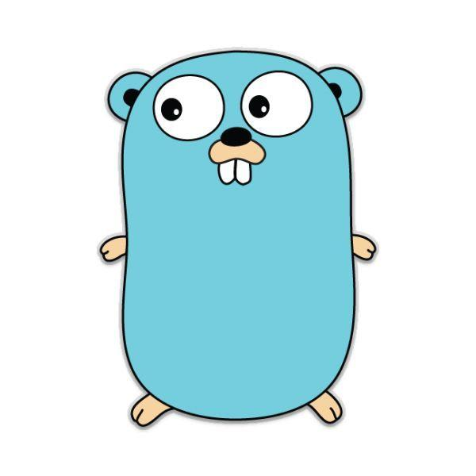
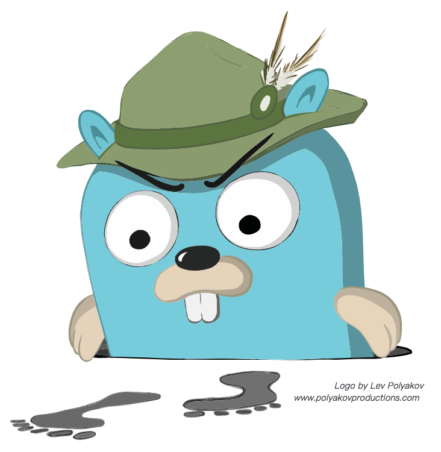
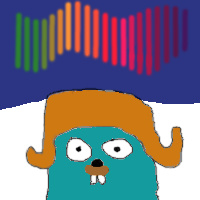
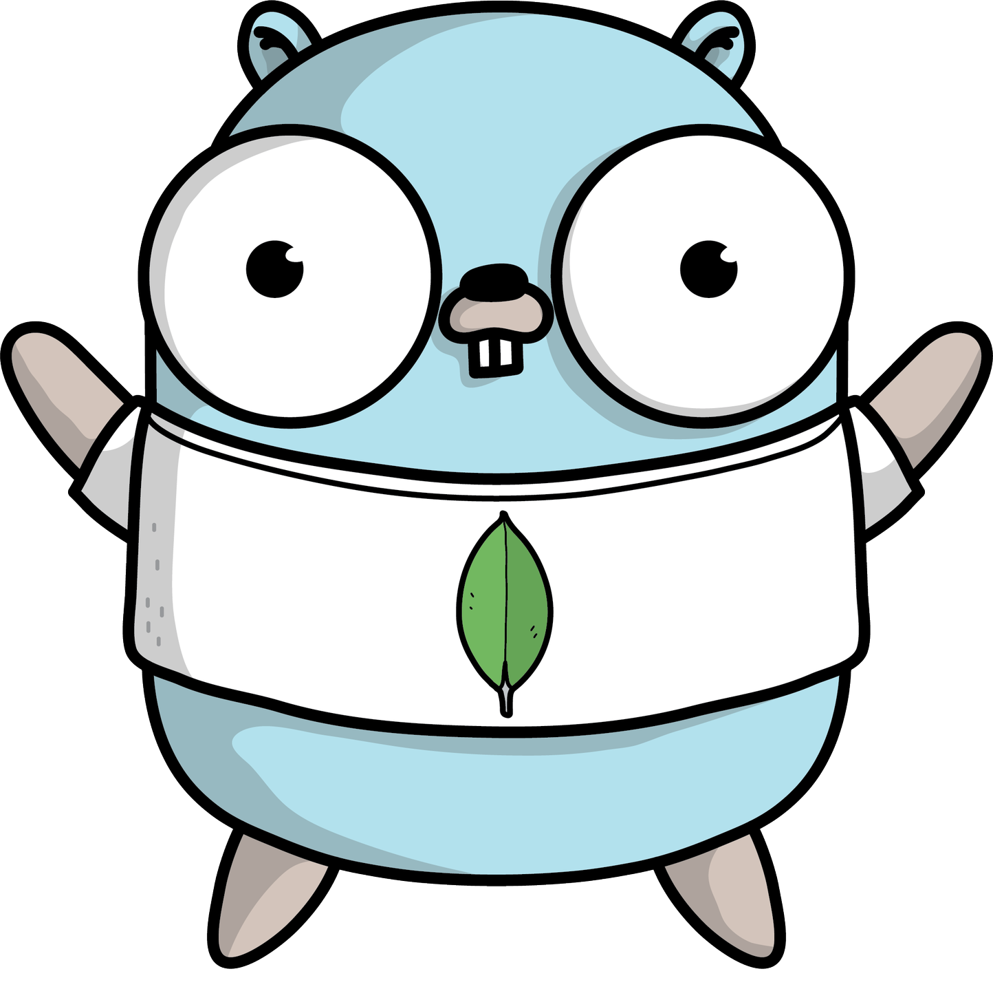
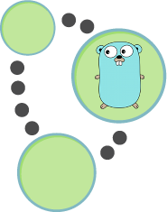
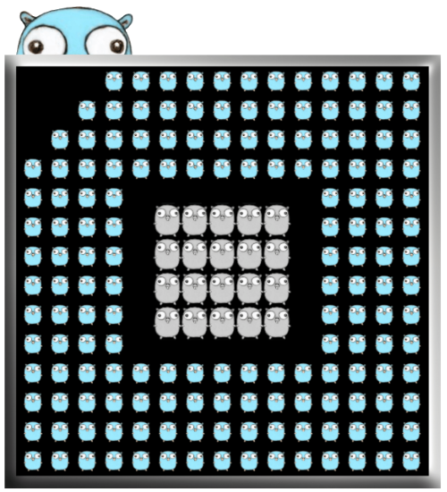
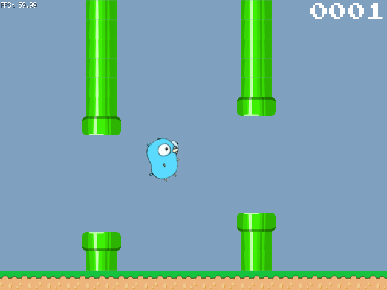

原文连接:https://www.cnblogs.com/openxxs/p/11214944.html
引子
Go语言的吉祥物是一只囊地鼠（gopher），由插画师Renee French设计，名叫Gordon，长得这个样子：

在Go官网上（https://golang.google.cn/）的Gordon长这个样子：

而Go语言生态中的许多框架、工具的logo或吉祥物也都是基于Gordon进行设计的，下面根据Gordon的各个亲戚介绍下一些有意思的框架和工具。
1. Jaeger

介绍：这只侦探Gordon是由Uber开源的分布式链路追踪系统，主要用于微服务架构下的系统监控分析，如分布式上下文传播、分布式事务监控、根本原因分析、服务依赖分析、性能延迟优化等。
地址：https://github.com/jaegertracing/jaeger
2. Casbin

介绍：这只举着盾牌的感觉弱弱的Gordon其实是强大的轻量级的访问控制（Access Control）工具，支持ACL、RBAC、ABAC等各类访问控制模型。
地址：https://github.com/casbin/casbin
3. Golang Crypto Trading Bot
介绍：玩区块链的同学可能会对这只机器人Gordon感兴趣，用于加密货币交易的机器人，但没有界面只能通过命令行进行交互。
地址：https://github.com/saniales/golang-crypto-trading-bot
4. Aurora

介绍：被这只Gordon丑到了哈哈哈。（在这只丑萌的Gordon打个人工水印：本文由openxxs整理，转载请求注明原作者）如果你想让ANSI命令行的输出绚丽多彩，包含各种颜色或带各种背景色，那么这个库可以满足你的各种骚想法。
地址：https://github.com/logrusorgru/aurora
5. Go-MySQL-Driver

介绍：这只抱着海豚的圆柱形Gordon一看就知道和MySQL脱不了干系，是为golang的database/sql包提供的轻量级的MySQL引擎，不绑定C相关库，纯Go语言实现。
地址：https://github.com/go-sql-driver/mysql
6. RethinkDB-go
介绍：和Gordon一起哼着小曲儿的是RethinkDB的吉祥物。RethinkDB是定位于实时应用的分布式NoSQL数据库，最大的特点是以可操作的格式存储JSON数据。而RethinkDB-go即在golang中的RethinkDB引擎。
地址：https://github.com/rethinkdb/rethinkdb-go
7. Mongo-go

介绍：这只穿着印有单片叶子图案的白校服Gordon，是golang中MongoDB的引擎。
地址：https://github.com/mongodb/mongo-go-driver
8. neoism

介绍：neoism是golang中Neo4j图形数据库的引擎。Neo4j也是NoSQL家族中的一员，是目前最流行的图形数据库。
地址：https://github.com/jmcvetta/neoism
9. go-health
介绍：Gordon医生为运行在Kubernetes、mesos等平台上的服务进行异步依赖健康检查。
地址：https://github.com/InVisionApp/go-health
10. Go kit

介绍：这只六边形Gordon实质是Go的软件包集合，提供构建安全可靠的微服务的工具集，广受好评，Star都1.4w+了。
地址：https://github.com/go-kit/kit
11. pdfcpu

介绍：一群小小的Gordon组成的CPU，是进行PDF文件处理的强有力工具，可以对PDF文件进行编码、解码、合并、拆分、旋转等等操作。
地址：https://github.com/hhrutter/pdfcpu
12. go-money
介绍：这只大富翁Gordon提供货币计算的功能，支持160多的货币种类，支持加减乘除及绝对值和取反6种运算，以应对“钱”相关计算的精度问题。
地址：https://github.com/rhymond/go-money
13. binding
介绍：这只照镜子的问号Gordon实际上是为go的net/http提供请求数据绑定功能的小工具，同时提供错误处理和有效性验证的功能，最大的卖点是不使用反射。
地址：https://github.com/mholt/binding
14. ebiten

介绍：如果你对2D小游戏的开发感兴趣，可以考虑下这只马里奥Gordon哦。它是一个2D游戏开发库，提供各种便捷的游戏功能，支持各类主流系统。
地址：https://github.com/hajimehoshi/ebiten
15. GoCV

介绍：这只浮夸的Gordon其实是OpenCV的支持库。
地址：https://github.com/hybridgroup/gocv
续集：Gordon家族（二）